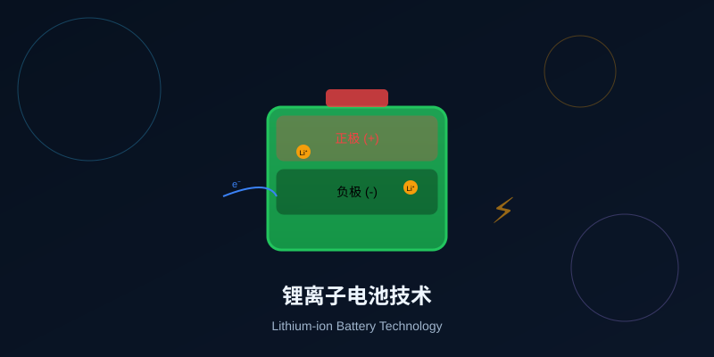

你的手机、笔记本、电动汽车都靠它供电。它是如何工作的？为什么既强大又危险？

锂离子电池已经无处不在，但它内部究竟发生了什么？选择一个你最关心的问题。
选择或输入后，本课会围绕你的问题展开。
开始学习前，测试一下你对电池的了解。答错没关系，找到学习重点更重要。
1. 下列哪项不是电池的必备组成部分？
2. 电池放电时，电子在外电路中如何流动？
3. 锂离子电池的名字来源于什么？
锂离子电池是一种可充电电池，依靠锂离子（Li⁺）在正负极之间移动实现电能与化学能的相互转换。
💡 重要澄清
现代商用锂离子电池不含金属锂！名字来源于锂离子在电池内部的移动，电极使用的是锂的化合物（如LiCoO₂）和石墨。
易错点1：很多同学误以为锂离子电池里真的有金属锂块。实际上，锂离子电池中的锂是以离子形式（Li⁺）存在于电极材料中，而不是金属锂。如果真的有金属锂，遇水会剧烈反应，非常危险！
氧化（Oxidation）
失去电子，放电时发生在负极
还原（Reduction）
得到电子，放电时发生在正极
点击电池的各个部件，了解它们的材料、功能和工作原理。
👆 点击上方电池部件，了解它们的功能和材料
易错点2：很多同学搞不清锂离子和电子的移动方向是否相同。答案是：方向相同（都从负极到正极），但路径不同。锂离子走"内电路"（通过电解质），电子走"外电路"（通过导线）。记住口诀："锂离子内窜，电子外跑"。
⚠️ 关键记忆点
记忆口诀：放电时锂离子从负极到正极；充电时从正极到负极。
点击按钮，观察充放电过程中锂离子和电子的移动方向。
📝 当前状态
点击上方按钮开始观察充放电过程
从5个角度深入理解，不只是记住结论。
✅ 核心优势
高能量密度｜长循环寿命（1000-5000次）｜低自放电（每月1-2%）｜无记忆效应｜相对环保
📱 应用领域
消费电子｜电动汽车｜储能系统｜航空航天
⚠️ 热失控（Thermal Runaway）
电池内部温度不断升高→更多化学反应→释放更多热量→恶性循环。最终可能起火爆炸。
易错点3：很多同学以为锂离子电池可以随意充电（随时充、随时拔）。虽然锂电池没有"记忆效应"，但深度放电（放到0%）和过度充电（充到100%长期停放）都会损伤电池。最佳使用区间是20%-80%。
🚨 常见安全隐患
完成学习后，来检验一下。全部答对可以获得满分评价！
1. 锂离子电池放电时，锂离子如何移动？
2. 隔膜（separator）的主要作用是什么？
3. 锂离子电池充电时，外接电源的作用是什么？
4. 下列哪项不是锂离子电池的优点？
根据你的掌握情况，选择合适的练习层次。
写出锂离子电池放电时锂离子和电子的移动方向。
提示：记住"放电时从负极到正极"。
为什么电动汽车电池包需要电池管理系统（BMS）？
提示：考虑过充、过放、温度、均衡等因素。
设计任务：如果你要设计一款用于电动汽车的锂离子电池，你会如何平衡能量密度、安全性、成本和寿命？
写下你的设计思路和权衡考量。
🎯 迁移思考
如果你要设计一款用于电动汽车的锂离子电池，如何平衡能量密度、安全性、成本和寿命？
本节点的前置、后续和同域知识由标准知识图谱模块自动渲染。
⚠️ 本课易错点总结